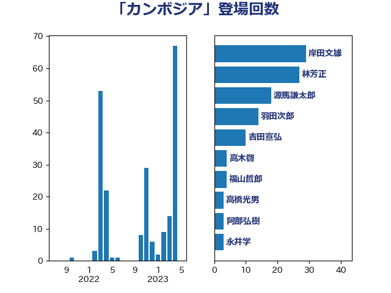

単語「カンボジア」

| 岸田文雄 | 自由民主党 | 29 回 |
| 林芳正 | 自由民主党 | 27 回 |
| 源馬謙太郎 | 立憲民主党 | 18 回 |
| 羽田次郎 | 立憲民主党 | 14 回 |
| 吉田宣弘 | 公明党 | 10 回 |
| 高木啓 | 自由民主党 | 4 回 |
| 福山哲郎 | 立憲民主党 | 4 回 |
| 高橋光男 | 公明党 | 3 回 |
| 阿部弘樹 | 日本維新の会 | 3 回 |
| 永井学 | 自由民主党 | 3 回 |
| 加田裕之 | 自由民主党 | 3 回 |
| 辻清人 | 自由民主党 | 2 回 |
| 谷公一 | 自由民主党 | 2 回 |
| 山田勝彦 | 立憲民主党 | 2 回 |
| 宮崎雅夫 | 自由民主党 | 2 回 |
| 高良鉄美 | 無所属 | 1 回 |
| 西村智奈美 | 立憲民主党 | 1 回 |
| 稲津久 | 公明党 | 1 回 |
| 秋本真利 | 自由民主党 | 1 回 |
| 玉木雄一郎 | 国民民主党 | 1 回 |
| 比嘉奈津美 | 自由民主党 | 1 回 |
| 櫛渕万里 | れいわ新選組 | 1 回 |
| 松川るい | 自由民主党 | 1 回 |
| 平木大作 | 公明党 | 1 回 |
| 岩田和親 | 自由民主党 | 1 回 |
| 太栄志 | 立憲民主党 | 1 回 |
| 堂込麻紀子 | 無所属 | 1 回 |
| 和田有一朗 | 日本維新の会 | 1 回 |
| 北神圭朗 | 無所属 | 1 回 |
| 勝部賢志 | 立憲民主党 | 1 回 |
| 中田宏 | 自由民主党 | 1 回 |
| 下条みつ | 立憲民主党 | 1 回 |
| 上田清司 | 国民民主党 | 1 回 |
| 一谷勇一郎 | 日本維新の会 | 1 回 |